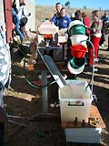
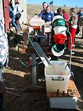

| Peter Lange's 'Industrial
Raku' Kiln.
Article and images by Steven Goldate.
 It's
amazing what a resourceful potter can do with some clay, a pile
of bricks and a gas burner. Inspired by industrial processes, Peter
Lange built an innovative conveyer belt raku kiln at the recent
ClayModern ceramics conference
in Gulgong, rural Australia. The idea was ingenious, the construction
simple and the effect truly amazing. This despite, or possibly rather
because of the ideological opposition of the concepts of
industry and raku. It's
amazing what a resourceful potter can do with some clay, a pile
of bricks and a gas burner. Inspired by industrial processes, Peter
Lange built an innovative conveyer belt raku kiln at the recent
ClayModern ceramics conference
in Gulgong, rural Australia. The idea was ingenious, the construction
simple and the effect truly amazing. This despite, or possibly rather
because of the ideological opposition of the concepts of
industry and raku.
 Using
plain house bricks, Lange built a small tunnel kiln lined with fiber
and with a burner port around the middle. The 'conveyer belt' was
built from disused kiln elements and was driven by a water powered
'turbine'. The waterwheel consisted of a number of plastic bowls,
arranged on an axle and 'powered' by running water from a hose.
Conference participants were invited to sculpt any number of figurines
from raku clay and send them off on their ten minute journey through
the fast fire kiln. Entering the tunnel wet, most came out fired
and otherwise unscathed at the other end, falling down a 'chute'
into a waiting bucket of water. Most breakages happened when a figurine
missed the bucket and fell on the ground. Using
plain house bricks, Lange built a small tunnel kiln lined with fiber
and with a burner port around the middle. The 'conveyer belt' was
built from disused kiln elements and was driven by a water powered
'turbine'. The waterwheel consisted of a number of plastic bowls,
arranged on an axle and 'powered' by running water from a hose.
Conference participants were invited to sculpt any number of figurines
from raku clay and send them off on their ten minute journey through
the fast fire kiln. Entering the tunnel wet, most came out fired
and otherwise unscathed at the other end, falling down a 'chute'
into a waiting bucket of water. Most breakages happened when a figurine
missed the bucket and fell on the ground.
 

After a couple of days of fun, laughter and spectator awe, production
numbers were high and Lange had created his own little terracotta
army, waiting for his command.
 
He proceeded to built a pyramid with a shrine at the top, the little
people making their way to their ceramic altar in a determined procession.
 
 Peter
Lange is a New Zealand potter who taught himself pottery in the
1970s. Initially making domestic ware, he turned his attention to
slip-cast trompe-l’oeil sculpture in the mid 1980s, after
an inspiring visit to New Zealand by Richard Shaw. Lange gained
notoriety in 2002 for building an 'Anagama
Boat' (following the motto "if you throw it in the
water and it sinks, then it's art... if it floats it's craft").
Intrigued by the resemblance of the interior of an Anagama kiln
to an inverted boat, Lange set out to prove that an inverted kiln
could float. He has also built a brick 'paper plane', a brick 'bag'
and a brick 'cone'. He won Merit awards at the Fletcher Challenge
Ceramics Award in 1984 and 1986. Lange is also known for his role
as co-director of Auckland
Studio Potters. Peter
Lange is a New Zealand potter who taught himself pottery in the
1970s. Initially making domestic ware, he turned his attention to
slip-cast trompe-l’oeil sculpture in the mid 1980s, after
an inspiring visit to New Zealand by Richard Shaw. Lange gained
notoriety in 2002 for building an 'Anagama
Boat' (following the motto "if you throw it in the
water and it sinks, then it's art... if it floats it's craft").
Intrigued by the resemblance of the interior of an Anagama kiln
to an inverted boat, Lange set out to prove that an inverted kiln
could float. He has also built a brick 'paper plane', a brick 'bag'
and a brick 'cone'. He won Merit awards at the Fletcher Challenge
Ceramics Award in 1984 and 1986. Lange is also known for his role
as co-director of Auckland
Studio Potters.
More Articles
Raku links
|


{kind=link}